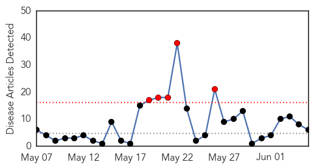
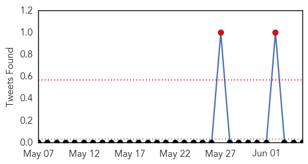
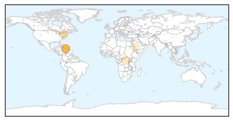
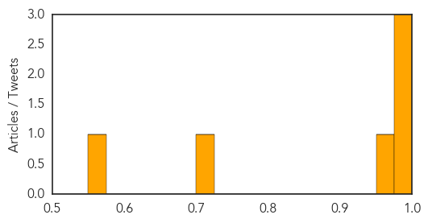

Toggle navigation
Early Warning
Daily Alerts
Cholera
Jun 05, 2015
Compare to:
-
Dengue Fever
Hemmorhagic Fever
Mold/Fungal Infection
Influenza
Meningitis
Pertussis / Whooping Cough
Middle East Respiratory Syndrome
Hepatitis
Chikungunya
Yellow Fever
Bubonic Plague
West Nile Virus
Swine Flu
Ebola
Measles
Unknown
Mumps
30 Day Trends
Web: 5
alerts
, 0
warnings
Twitter: 0
alerts
, 0
warnings
Top Articles:
0.997
Haiti and United Nations Accountability: The Cholera Epidemic
0.992
Cholera’s fresh attack in Haiti
0.990
Cholera’s fresh attack in Haiti
0.956
Lawyers file appeal against US judge ruling on cholera cases
0.713
UN relief wing boosts emergency support to refugees fleeing Burundi crisis
0.564
Health Ministry unveils plan for Haj 1436Healthcare
Top Tweets:
0.545
Fleeing insecurity and cholera, Burundians pour into Uganda - fear for cholera http://t.co/e8A0P4KMlz
Web/News Articles

Tweets

Article Locations

Article Confidences
